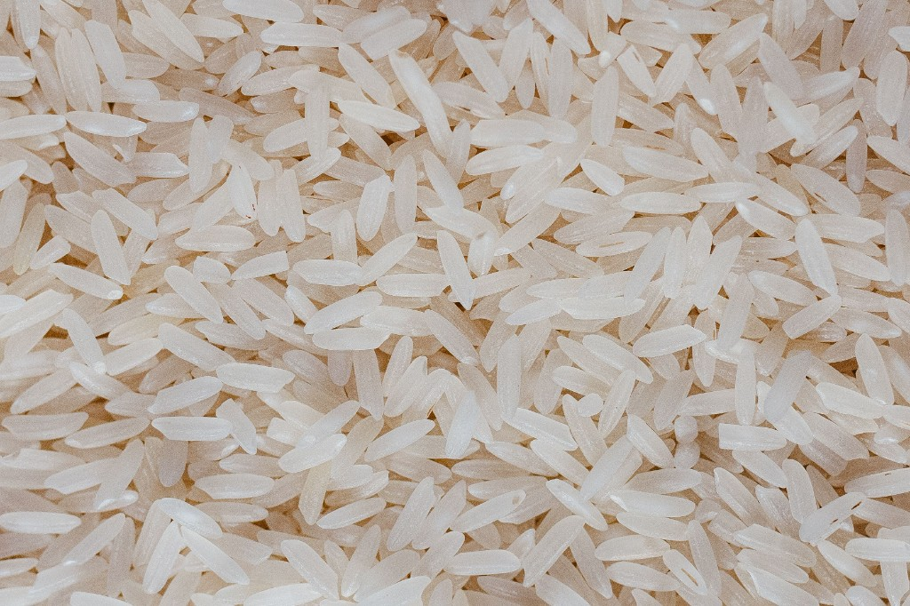
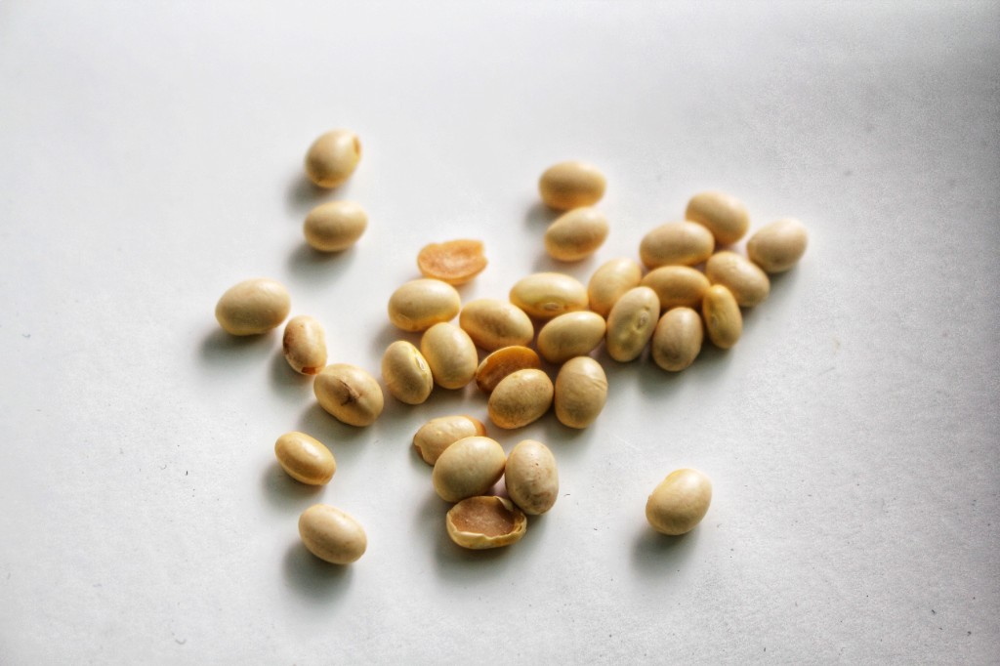
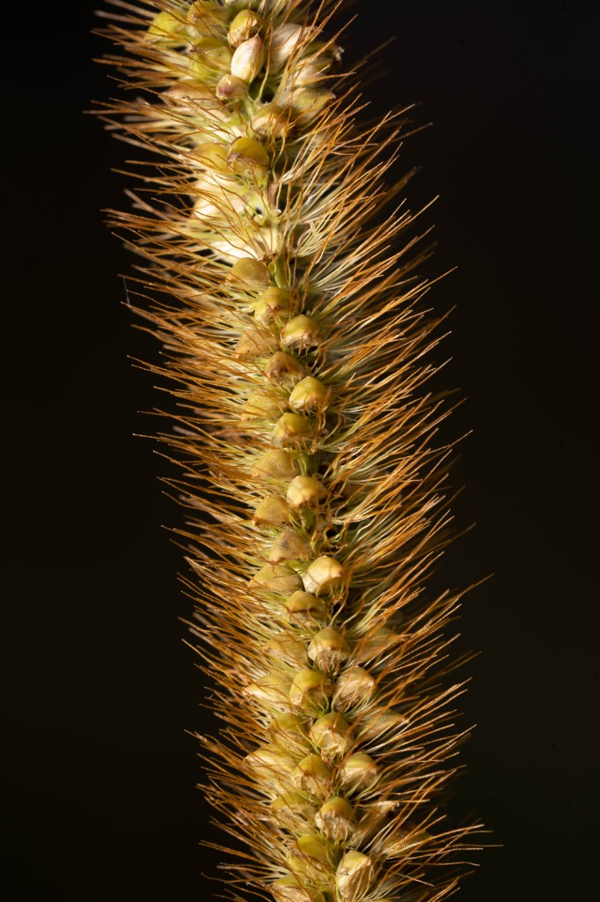

Core staples from rice agriculture to tea cultivation—foodways that define East Asian culture. Select a crop to open its research dossier.

The daily grain of East Asia.

Protein for tofu, sauce, and oil.

An early dryland cereal of northern China.
A cultivated leaf that shaped trade and ritual.